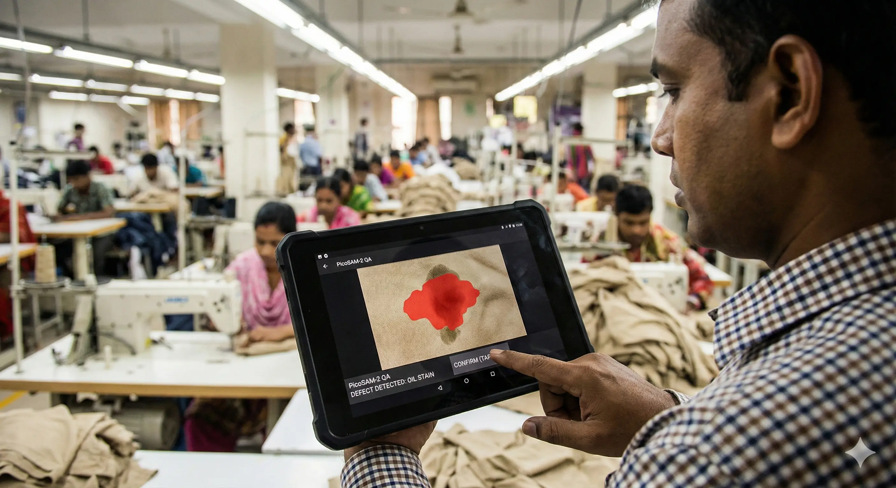

QC Vision
Real-time fabric defect detection running on commodity edge hardware.
28ms Inference. 92% F1 Score.
Hardware Reality

Fig 2: Recycled Smartphone as Vision Sensor (Zero-CAPEX model)
The Leakage: RMG factories lose 3-5% of total yardage to defects. Current solutions are polarized: manual inspection (slow, error-prone) or imported AOI rigs (KeyeTech/Kevision) that cost >$12,000 and are hardware-locked.
The Innovation: By utilizing recycled Android smartphones as sensors, we leverage high-quality camera optics and Snapdragon processors for a fraction of the cost. This "Frugal Innovation" lowers CAPEX to under $150 per line.
Edge Architecture
-
Backbone Model
MicroViT-Tiny-Q8 (Quantized). 9M parameters. Replaced DINO-v2-Small for 3.6x speedup on CPU. *Quantization allows complex models to run on simpler chips by reducing precision without losing accuracy.*
-
Segmentation
PicoSAM-2. Promptable mask generation allows "Human-in-the-Loop" labeling by QA managers. They simply tap a defect on the tablet to teach the system.
class QCModel: def predict(self, img_stream): # 1. Load 8-bit Quantized ONNX Model session = ort.InferenceSession("models/microvit_q8.onnx") # 2. Vision Transformer Feature Extraction feat = session.run(None, {"input": img_stream})[0] # 3. Generate Defect Mask (PicoSAM) mask = self.sam_decoder.run(feat) return { "defect_detected": bool(mask.mean() > 0.07), "quality_grade": "REJECT" if mask.mean() > 0.2 else "PASS" }